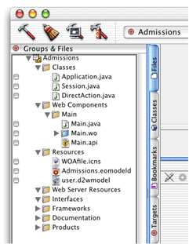

The server-side project files created by Project Builder are
distributed across several groups. Most notable of these is the
Main component (Main.wo)
in the Main subgroup located in the Web Components group.
The Main.html file
in Main.wo contains this
code:
<HTML> <HEAD> <TITLE>Main</TITLE> </HEAD> <BODY> <CENTER>Please wait for the application to open other windows (please note: it is better to start the application from the command line, as a java application).<WEBOBJECT NAME=Applet></WEBOBJECT></CENTER> </BODY> </HTML>
The Main.wod file
contains this code:
Applet: WOJavaClientApplet {
applicationClassName = "com.webobjects.eogeneration.client.EODynamicApplication";
height = 0;
width = 0;
useJavaPlugin = true;
downloadClientClasses = "customBundlesClientClasses";
}
The <WEBOBJECT NAME=Applet> tag
in Main.html is bound
to the definition of Applet in Main.wod,
which specifies that Applet represents
a WOJavaClientApplet component.
In Main.wod, some bindings
for WOJavaClientApplet are
specified.
The most important of these is the applicationClassName binding.
This binding is the switch that determines if a Java Client application
is of the direct type or nondirect type. As the project type in
this tutorial is of the direct type, the binding specifies com.webobjects.eoapplication.EODynamicApplication.
The default binding is com.webobjects.eoapplication.EOApplication,
so if the binding is not present in Main.wod, the
default is assumed (this is the case for projects begun with the
nondirect project type). See "Distribution Layer Objects" for
more information on the bindings for WOJavaClientApplet.
Other server files include
Application.java, Session.java,
and DirectAction.java class
files.Main.api).Figure 3-13 shows the default groups and files.
Figure 3-13 The default groups and files
The next section continues building the tutorial project.